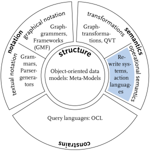
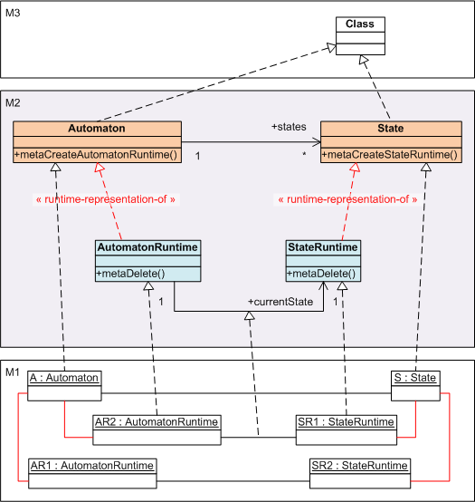
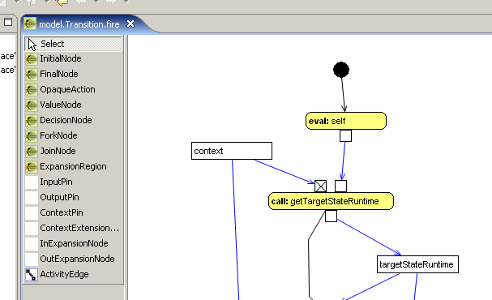
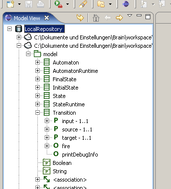
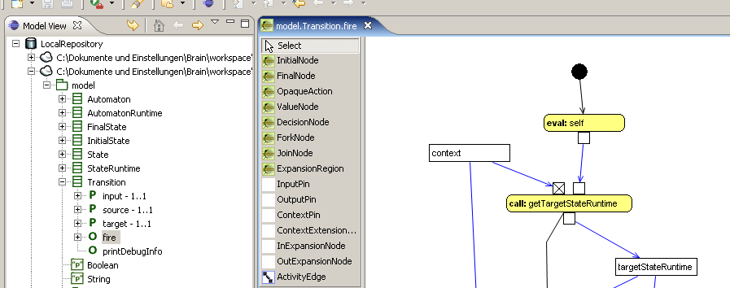
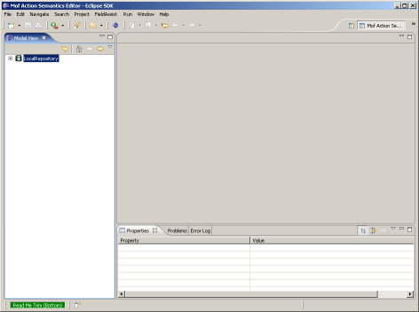
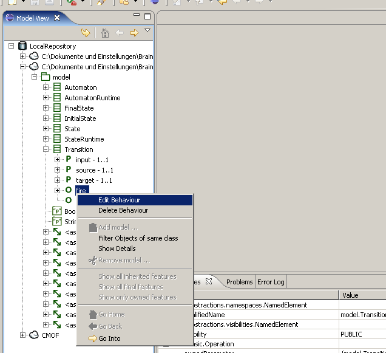

Tutorial: Using our Tools for Model Driven Language Development
written by Andreas Blunk, May 2007
This tutorial shows how our language modelling tools can be used together to create all aspects of a computer language. The demonstration is based on an example language for modelling and executing simple state automatons. Before you continue reading, you should download the complete language definition as a jar-archive from here or check it out from SVN. It contains an Eclipse project that includes all the necessary resources we are using in this tutorial (e.g. all models that make up the language). You may use the archive without Eclipse at first, but in the last part, a working Eclipse 3.2 installation will be required. So you should install Eclipse 3.2 now and then import the archive as an Eclipse project. When you have finished, we can proceed with the tutorial.
Overview
We begin with an overview of our language modelling method and then construct the example language by using the various tools.
Computer languages consist of different aspects like structure, static constraints, notation and execution semantics. Like any other piece of software, they can be modelled. Language modelling reduces language development to modelling each language aspect, so that tools and specifications can automatically be derived.
 |
Structural models of the language concepts are the basis for all other language aspects. They define the language's abstract syntax in a language meta-model (they define the models the user can write). All other language aspects are based on the language meta-model. They provide meta-model elements with additional information that is needed to describe certain language aspects, e.g. notation and semantic. For modelling structure, we use the CMOF language as a meta-meta-model. It allows object-oriented modelling and provides enhanced features like subsetting and redefinition that allow a flexible design and embrace reuse of common language concepts. But structure is just one aspect of a language and many languages are more than just static structure. They describe dynamic processes. If we want to execute, interpret or simulate models in these languages, we have to define their execution semantics. Our approach is to define static structures (language concepts) and dynamic structures (runtime concepts), and then apply behaviour descriptions to them. Static structures define the model the user can write, while dynamic structures define additional data structures where runtime information is saved. This information allows execution of different runtime models based on the same static model. We augment structure models with operations to describe the behaviour of a model in a defined language. These behaviour models describe state changes in the language model. Different possibilities exist to specify behaviour, e.g. pure Java code, activity diagrams from UML or abstract state machines. In order to understand this tutorial, you should be familiar with our CMOF-based programming framework A MOF 2.0 for Java. Further knowledge of our operational approach to define execution semantics is not required but may be helpful. Please refer to the following articles and papers for detailed information: |
An Example Language
We choose to create a language for modelling and executing state automatons because they are perfectly suited for demonstrating all the language aspects. We first describe the process for creating the language structure and then continue with the definition of execution semantics.
The central language aspect is a meta-model that describes the structure of state automatons. The basic concepts are: automaton, transition and state with a special initial state and final state. Based on these concepts, the structure model should reflect the following rules:
An automaton has a name. It may have many states and many transitions. There has to be one intial state and one or more final states. Each state has a name and outgoing as well as incoming transitions. Transitions describe state changes by defining on which input token a transition fires. A transition must have one source and one target state. States can consume input tokens. Consuming a token results in the firing of an outgoing transition. An automaton can consume a sequence of input tokens.
Furthermore a state may contain a sub-automaton. This is a language feature that can be compared to types in computer languages. We define an automaton (the type) and use it as a sub-automaton in many different states (instances of the type). Each sub-automaton may reside in a different inner state at runtime. Thus extra runtime information is needed to execute the language model. This feature can be compared to an object instance of a type that has its own identity and its own state. Whenever we have such a type concept in a language, we need runtime structures that deal with runtime information. Composite state automatons are a perfect example to show this modelling aspect here. But lets concentrate on the syntax and then go over to runtime structures.
Modelling Structure
The structural concepts can be modelled with MagicDraw UML. We support loading and saving MagicDraw models within our modelling tools. This allows us to use MagicDraw as the basis for modelling structure. But we are not dependend on MagicDraw UML, you can use any UML tool that can load and save a model in XMI format version 2.0. However, further explanation will refer to MagicDraw UML. You will be given the complete structure model as MagicDraw-XMI at the end of the section.
Syntax
We first model the syntax of the state automaton language with respect to the basic state automaton concepts we identified before (see figure below).
Figure: syntax part of the language meta-model in MagicDraw format (click to view larger image)
{kind=link}
Static Constraints
TODO
Runtime Structure (part of the Semantic)
In our approach, executing a model requires the definition of operational semantics. Part of the semantic description is a behaviour model that works on an instance of the syntax model. It executes this instance by changing the instance's state. The syntax model defines all the models a user can write and execute. But execution requires additional runtime information (e.g. the currentState of an automaton). Such runtime information could be stored in the model itself. But this approach has flaws. One problem is that we will lose the model's initial state if we execute it. Furthermore we often need several runtime representations of the same model element. E.g. in our language, each automaton instance has to remember its current state. If we have an automaton with two states and each of them contains the same sub-automaton X, then each instance of X could be in another state at runtime. We create a runtime class AutomatonRuntime for the static class Automaton and relate the two classes via an UML realisation arrow. This model element represents a runtime-representation-of relationship which we can use because there is no predefined meaning in CMOF (our meta-meta-model). The next step is to establish an association to class State with the association end named currentState. This will save the current state of different runtime representations of the same automaton instance.
But how do we instantiate runtime classes and how are they connected to syntax classes? Whenever we need a new runtime representation, we simply invoke a create method at the syntax class, e.g. metaCreateAutomatonRuntime(). We may also invoke metaDelete() on the runtime class to destroy runtime information. These operations are created by a modelling framework that also manages runtime relationships. We are going to present this framework later. The next figure illustrates what we just explained.
Figure: Relations between syntax and runtime structure and the meta layers. M3 is CMOF, M2 is the language meta-model and M1 is a model in the language. Unlabeled UML realisation arrows represent instance-of relationships between model layers.

For our example language we will need more runtime information to actually execute a model. You can see the required elements in the figure below. TODO
Figure: complete structure of the language - syntax and runtime structure (click to view larger image)
{kind=link}
Programming with CMOF-based Models
Our language meta-model is based on CMOF. In order to work with CMOF-based models, we developed a programming framework: A MOF 2.0 for Java (abbreviated AMOF). It allows storing and managing languages (meta-models) and programs (models). Our language meta-model has to be in a format that AMOF can understand. AMOF currently understands XMI version 2.0 and file formats of several proprietary UML modelling tools. One of them is MagicDraw UML which we have already used in the last section. In order to use the model with AMOF we have to generate a repository.
Generating Repository Code
The generation of repositories is a general task that has to be repeated everytime the model changes. Therefore AMOF supplies several Ant tasks. We can use them in an Ant file to generate the repository.
Figure: repository-build.xml
1 <project name="StateAutomaton" basedir="." default="generate-repository"> 2 3 <property name="src-dir" value="${basedir}/src"/> 4 <property name="gen-src-dir" value="${basedir}/generated-src"/> 5 <property name="bin-dir" value="${basedir}/bin"/> 6 7 <path id="classpath"> 8 <pathelement path="${bin-dir}"/> 9 <fileset dir="${basedir}/resources/lib">
Directory where Ant looks for the AMOF binaries.
10 <include name="**/*.jar"/> 11 </fileset> 12 </path> 13 14 <target name="init"> 15 <mkdir dir="${bin-dir}"/> 16 <typedef name="package" classname="hub.sam.mof.ant.Package" classpathref="classpath"/> 17 <taskdef name="generatecode" classname="hub.sam.mof.ant.GenerateCode" classpathref="classpath"/>
Here we declare new Ant tasks from AMOF which we use in subsequent targets.
18 </target> 19 20 <target name="clean"> 21 <delete dir="${bin-dir}"/> 22 <delete includeemptydirs="true"> 23 <fileset dir="${gen-src-dir}" includes="**/*"/> 24 </delete> 25 </target> 26 27 <target name="generate-repository" depends="clean,init"> 28 <generatecode src="resources/StateAutomaton.syntax.mdxml" md="true" destDir="./generated-src" instances="true">
This task generates the repository code. The parameters used here have the following meaning.
- src: the language meta-model as input
- md: indicates that the model file is in MagicDraw-XMI format
- destDir: a directory where repository code will be placed
- instances: instructs AMOF to generate extra code for classes that are related to each other via runtime-representation-of-relationships (e.g. methods for creating and destroying runtime classes)
29 <package name="model" javaPackagePrefix="hub.sam.stateautomaton"/>
The meta-model is located in CMOF package "model". We add a prefix to the model's package so that code will be generated in Java package "hub.sam.stateautomaton.model" instead of just "model".
30 </generatecode> 31 </target> 32 33 </project>
[DO] You should now generate the state automaton repository by executing the generate-repository target with Ant.
Creating a State Automaton Model
Now we are able to create a state automaton model as instance of the language meta-model. This is referred to as a program in traditional computer languages. For demonstration purposes the model must use some important language features. It has to be a model with several runtime representations of the same automaton at runtime. Therefore we create a model that consists of an automaton X with states A and B and both states contain a sub-automaton Y. The automaton Y has two states C and D. All of the automatons have initial and final states and transitions between them (see figure below).
Figure: example state automaton model

You can find the source code for creating this model in package hub.sam.stateautomaton, class StateAutomaton, method createLargeTest. The next section explains how the automaton X can be executed for a sequence of input tokens like "dbdecacf". We will see that automaton Y resides in two different states at runtime, one for state A and one for state B.
Modelling Execution Semantics
Abstract
The first question is: What does it mean to execute a model in the language?
The answer is different from language to language. In this case, executing a model means: consume a sequence of input tokens in a dedicated initial automaton by transitioning between the automaton's states. Each transition consumes one input token and changes the automaton's current state. If there is a sub-automaton in a state and there is no transition in the current state that can consume this token, then the sub-automaton's state tries to consume it. The token is disgarded, if it cannot be consumed. This explanation is referred to as execution semantics.
The second question is: How do we model execution semantics?
There are transformational and operational approaches. Our approch is to use operational semantics. We add semantic to the model by augmenting it with operations. These operations describe transitions between model states by executing behaviour that changes the model. We describe behaviour with respect to instances of the corresponding meta-model class.
For our example language we define the following operations:
- Automaton::instantiate creates an new instance of AutomatonRuntime
- AutomatonRuntime::run executes a sequence of input tokens on the automaton
- AutomatonRuntime::initialise makes the transition from an initial state to the first real state
- AutomatonRuntime::remove destroys runtime information for this runtime representation of an automaton
- State::getEnabledTransition is a query operation that returns the transitions that could fire in this state
- Transition::fire makes the transition and changes the automaton's current state to the target state
- Transition::printDebugInfo is a helper operation that prints debug information when the transition fires (source state, target state, input token consumed)
- StateRuntime::consume tries to find a transition that can fire or forwards consumation to a sub-automaton
- StateRuntime::getTargetStateRuntime ...
- StateRuntime::createInnerAutomatonRuntime ...
We can use pure Java code or an UML like activity language to describe the behaviour of these operations.
Custom Java Implementations
Lets begin with writing pure Java code. AMOF lets us define custom implementations of a model's operations in a Java class named <meta-model-class>Custom. The class has to be placed in the same package as the meta-model class. We start by writing implementations of the operations Automaton::instantiate and AutomatonRuntime::run.
The purpose of Automaton::instantiate is to create a new runtime instance AutomatonRuntime (using the generated operation metaCreateAutomatonRuntime) and then change its current state to the automaton's initial state.
Figure: source code AutomatonCustom.java
1 package hub.sam.stateautomaton.model; 2 3 public class AutomatonCustom extends AutomatonDlg { 4 5 @Override 6 public AutomatonRuntime instantiate() { 7 AutomatonRuntime automatonRuntime = self.metaCreateAutomatonRuntime(); 8 9 // set currentState in automatonRuntime to initial state 10 StateRuntime initialStateRuntime = getInitialState().metaCreateStateRuntime(); 11 automatonRuntime.setState(getInitialState(), initialStateRuntime); 12 automatonRuntime.setCurrentState(initialStateRuntime); 13 14 System.out.println("instantiated: " + AutomatonRuntimeCustom.getDebugName(automatonRuntime)); 15 16 return automatonRuntime; 17 } 18 19 }
The operation AutomatonRuntime::run calls initialise first and then tries to consume each input token in the current state.
Figure: source code AutomatonRuntimeCustom.java
1 package hub.sam.stateautomaton.model; 2 3 import hub.sam.stateautomaton.StateAutomaton; 4 5 public class AutomatonRuntimeCustom extends AutomatonRuntimeDlg { 6 7 // .. 8 9 @Override 10 public void run(java.lang.String input) { 11 initialise(); 12 13 while (input.length() > 0) { 14 StateRuntime stateRuntime = getCurrentState(); 15 16 java.lang.String chr = input.substring(0, 1); 17 boolean consumed = stateRuntime.consume(chr); 18 input = input.substring(1); 19 if (!consumed) { 20 // ignore token 21 System.out.println("ignoring input token '" + chr + "'"); 22 } 23 } 24 } 25 26 }
Custom implementations for the other operations are not much different. You should now look at them and get familiar with how execution semantic for our example language is implemented with Java. (should we describe the example language's semantic in more detail?)
After having written custom implementations for all operations, we can execute a state automaton model as follows:
(source code extracted from main method in StateAutomaton.java)
1 Automaton automaton = createLargeTestModel(testFactory); 2 AutomatonRuntime automatonRuntime = automaton.instantiate(); 3 automatonRuntime.run("dbdecacf"); 4 automatonRuntime.remove();
Activities
The problem with Java code is that its not model based and so tools cannot be derived (e.g. a debugger). What we need is a model based specification of the language semantics. Our approach is to use an activity language that is similar to UML activities. Actually our activity language is a subset of UML activities and its semantic is based on well-known petrinets. It is designed to describe semantic in CMOF-based models, and so we named it MOF Action Semantics (abbreviated MAS). It defines a set of atomic actions that can be used to describe operational semantics. Activities are composed of these actions plus some more elements. Each activity models the behaviour of an operation. If the model is executed, the corresponding activities will be interpreted in the context of a model instance. We now present our tools for modelling such activities, but without going into the details of the activity language. We then show you how to use the tools and explain one activity in detail.
In the past, we just had a parser that could transform a textual notation of an activity into a model instance of the MAS language model. The notation was very cryptic and difficult to understand. Therefore we decided to develop a graphical editor that is based on Eclipse's GEF. This editor is known as MASE (MAS Editor).

At first, we had seperate files for the activities. Each file contained one activity model in XMI format. The connection between operation and activity was simply based on the operation's name. The activity files had to be named the same with a special ending (e.g. operation run with activity file run.asxml). The activity interpreter then loaded this file into AMOF and executed it in an instance of a corresponding structure model. This approach had several flaws. We compensated them by using an Eclipse plugin that we had already developed. You may know the plugin from the AMOF Tutorial page. Its the MOF2-Browser Plugin. It can be used to browse through a CMOF-based model in an Eclipse Tree View.

We now use it together with MASE to provide language developers with a simple interface for modelling activities. You can browse through a structure model, right-click on an operation und choose "Create Behaviour" or "Edit Behaviour" to open a MASE editor.

Multiple editors can be opened at the same time. The activities are saved together in one XML file. More details will follow later. At this point, we want you to install the needed plugins. We then show you how to use them.
Installing required Eclipse Plugins:
We combined the various Eclipse Plugins into an Eclipse Feature. It includes AMOF (as a plugin), MASE and the MOF2 Browser Plugin. Please install this feature by following our instructions.
Open the Eclipse Installation Wizard ...

Select "Search for new features to install" ...

Choose "New Remote Site ..." and enter "http://amof2.berlios.de/updatesite" as the update site's URL.

Select the added update site and click "Finish" to proceed.
Select the feature "Model Driven Language Development Feature"

Click "Finish" to start installation.
Lets play with the installed plugins. We want to open the semantic specification that we provided with the example language. Please switch to the Eclipse perspective "Mof Action Semantics Editor" first. This opens a special editing perspective with the MOF2 Browser Plugin at the left, MAS Editors at the right and a properties view at the bottom.





TODO: mas context file, describe one activity in detail
Executing the State Automaton Model
creating a MasContext ...
Summary
Future Tools
Modelling Notation
Textual Editing Framework (TEF) ...
Debugging Operational Semantics
MAS Debugger (DeMAS) ...